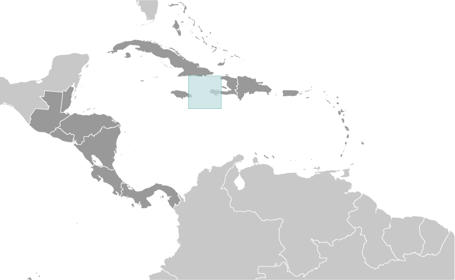
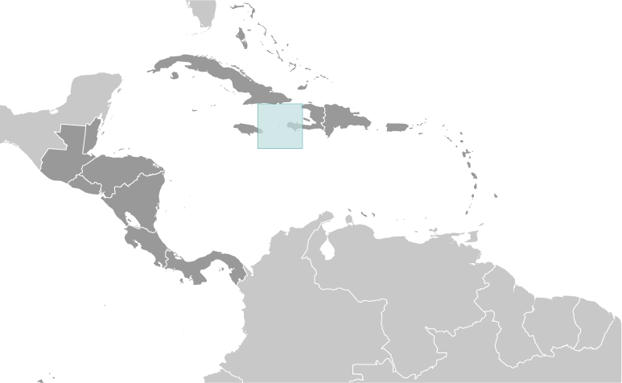

Central America ::
Navassa Island
-
Introduction :: Navassa Island
-
Background:This uninhabited island was claimed by the US in 1857 for its guano. Mining took place between 1865 and 1898. The lighthouse, built in 1917, was shut down in 1996 and administration of Navassa Island transferred from the US Coast Guard to the Department of the Interior, Office of Insular Affairs. A 1998 scientific expedition to the island described it as a "unique preserve of Caribbean biodiversity." The following year it became a National Wildlife Refuge and annual scientific expeditions have continued.
-
Geography :: Navassa Island
-
Location:Caribbean, island in the Caribbean Sea, 30 nm west of Tiburon Peninsula of HaitiGeographic coordinates:18 25 N, 75 02 WMap references:Central America and the CaribbeanArea:total: 5.4 sq kmland: 5.4 sq kmwater: 0 sq kmcountry comparison to the world: 249Area - comparative:about nine times the size of the National Mall in Washington, DCLand boundaries:0 kmCoastline:8 kmMaritime claims:territorial sea: 12 nmexclusive economic zone: 200 nmClimate:marine, tropicalTerrain:raised flat to undulating coral and limestone plateau; ringed by vertical white cliffs (9 to 15 m high)Elevation:0 m lowest point: Caribbean Sea85 highest point: 200 m NNW of lighthouseNatural resources:guano (mining discontinued in 1898)Land use:agricultural land: 0% (2011 est.)arable land: 0% (2011 est.) / permanent crops: 0% (2011 est.) / permanent pasture: 0% (2011 est.)forest: 0% (2011 est.)other: 100% (2011 est.)Natural hazards:hurricanesEnvironment - current issues:some coral bleachingGeography - note:strategic location 160 km south of the US Naval Base at Guantanamo Bay, Cuba; mostly exposed rock with numerous solution holes (limestone sinkholes) but with enough grassland to support goat herds; dense stands of fig trees, scattered cactus
-
People and Society :: Navassa Island
-
Population:uninhabited; transient Haitian fishermen and others camp on the island
-
Government :: Navassa Island
-
Country name:conventional long form: noneconventional short form: Navassa Islandetymology: the flat island was named "Navaza" by some of Christopher COLUMBUS' sailors in 1504; the name derives from the Spanish term "nava" meaning "flat land, plain, or field"Dependency status:unorganized, unincorporated territory of the US; administered by the Fish and Wildlife Service, US Department of the Interior from the Caribbean Islands National Wildlife Refuge in Boqueron, Puerto Rico; in September 1996, the Coast Guard ceased operations and maintenance of Navassa Island Light, a 46-meter-tall lighthouse on the southern side of the island; Haiti has claimed the island since the 19th centuryLegal system:the laws of the US, where applicable, applyDiplomatic representation from the US:none (territory of the US)Flag description:the flag of the US is used
-
Economy :: Navassa Island
-
Economy - overview:Subsistence fishing and commercial trawling occur within refuge waters.
-
Transportation :: Navassa Island
-
Ports and terminals:none; offshore anchorage only
-
Military and Security :: Navassa Island
-
Military - note:defense is the responsibility of the US
-
Transnational Issues :: Navassa Island
-
Disputes - international:claimed by Haiti, source of subsistence fishing